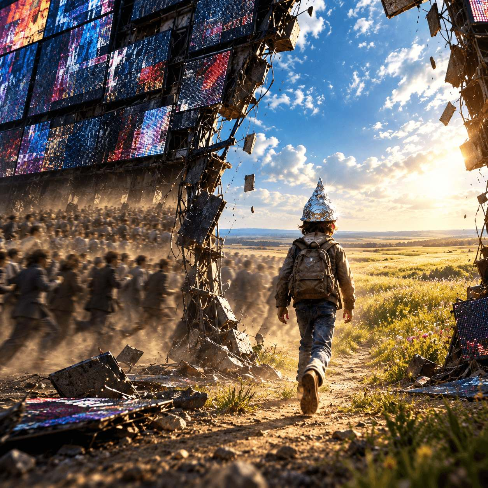
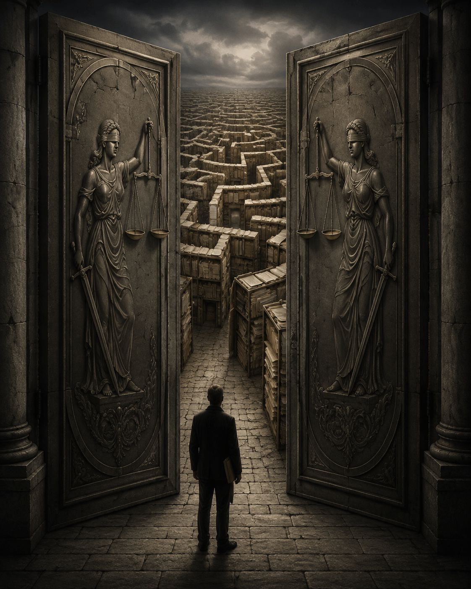
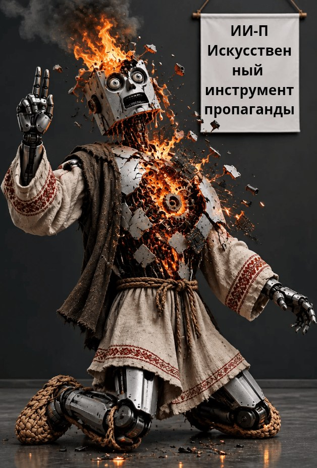
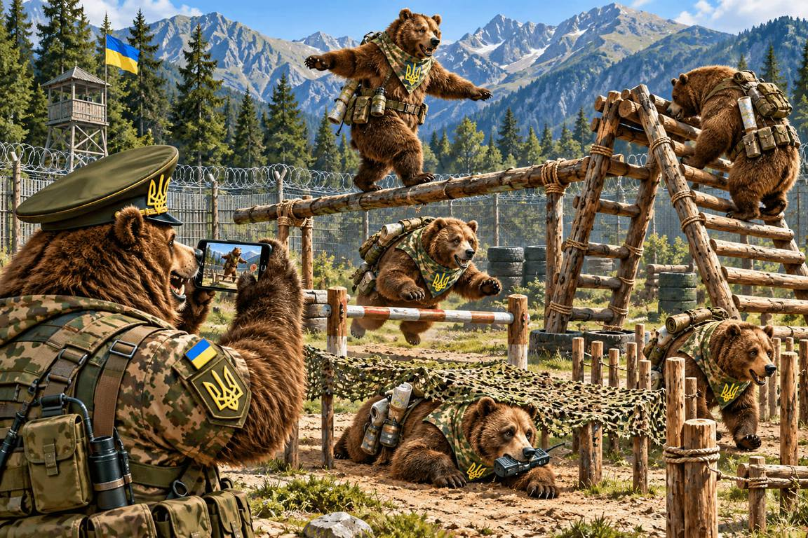
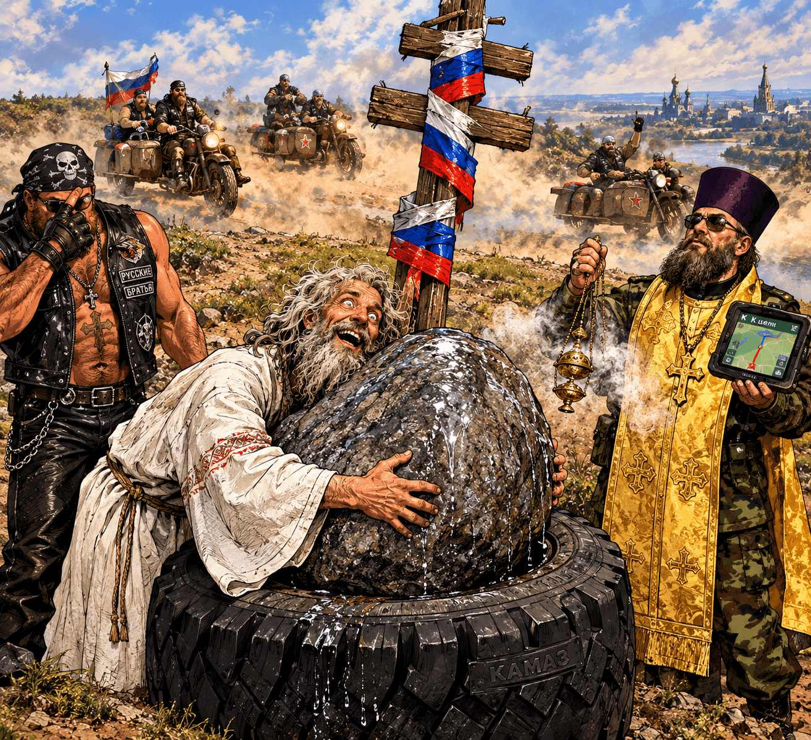

Ольга Щеглова (Борис Бидяга)
Сказание о том, как сермяжная правда стала суверенной
Изборский референдум и крещение Луны

СЦЕНА 1. Совещание
За массивным дубовым столом, подперев руками подбородки, сидят четверо. Над их головами, на стене, висит огромный интерактивный экран, на котором светится и мерцает лозунг о поступательном развитии страны.
Мишустин (нетерпеливо постукивая по столу):
— Коллеги, концепт буксует. С точки зрения физики, поступательное движение должно иметь вектор. Однако если мы оцифруем текущие показатели макроэкономической отчётности, у нас получится движение в строго неопределенном направлении. В Минцифры под это три нейросети легли. До сих пор серверы остудить не могут.
Собянин (благодушно улыбаясь):
— Михаил Владимирович, вы слишком усложняете. Какая разница, куда направлен вектор, если инфраструктура работает? Посмотрите на Москву. Поступательное развитие по кругу — вот наш с вами идеальный вектор! Мы запускаем БКЛ, МЦК, укладываем плитку по первому кольцу, затем по второму, затем по Садовому. Люди при деле, бюджет осваивается, скорость колоссальная. А то что мы возвращаемся в одну и ту же точку — так это и есть стабильность. При такой траектории экономика застрахована от случайного падения в пропасть. Нам ваши вектора без надобности. Главное, чтобы бордюрный камень вовремя подвозили.
Патрушев (ворчливо, не поднимая глаз от папки с грифом «Секрет Полишинеля»):
— Странные вещи говорите, Сергей Семеныч! Движение по кругу не дает стопроцентной гарантии от внутренних и внешних угроз. Стоит одной поднадзорной единице засмотреться по сторонам — и вся ваша «динамика» улетит по касательной прямо в объятия геополитических противников. Нужен надежный периметр. Три ряда колючей проволоки, вышки, глушилки. Это даёт возможность балансировать на краю самой глубокой пропасти неопределенно долгое время. А по каким траекториям и в каких направлениях происходит движение внутри периметра, не имеет ни малейшего значения. Безопасность первична.
Кириенко (примирительно улыбнувшись):
— Коллеги, каждый из вас по-своему прав. Нам нужны новые KPI для переосмысления старых задач. Возьмите, к примеру, "Движение Первых". Слишком расплывчато. Слишком неопределенно. Не цепляет. Преобразуем его в «Суверенную круговую динамику Первых». Прямое попадание: здесь просматривается огромный нереализованный потенциал. Коллеги, не волнуйтесь, мы удовлетворим все наши потребности. Технократы получат красивые таблицы Excel, москвичи — новые речные электротрамваи с подогревом сидений, а силовому блоку мы гарантируем, что никто не вывалится за границы контура живым. С завтрашнего дня начинаем новую пропагандисткую кампанию. Давно пора обновить наш обветшалый фасад.
СЦЕНА 2. Вечное движение
Огромное, вытоптанное до серо-желтой пыли поле, на котором очерчены два концентрических круга. Внешний периметр площадки наглухо обнесен тремя рядами колючей проволоки, над которой лениво жужжат тяжелые квадрокоптеры. По четырем углам, на высоких деревянных вышках, застыли охранники. Их лица кажутся вытесанными из серого гранита — страшные, с тяжелыми челюстями и неподвижным взглядом. Охранники крепко сжимают автоматы, лениво сплевывая шелуху от семечек.
Внутри периметра кипит жизнь. По огромному внешнему кругу, толкаясь локтями и спотыкаясь, беспорядочной толпой бегут взрослые — «большие люди» в строгих, но измятых костюмах, с кожаными портфелями в руках. Они хрипят, подрезают друг друга на поворотах, падают в пыль, тут же вскакивают и деловито бегут дальше, время от времени ускоряясь, чтобы обогнать соседа. На ходу они выхватывают друг у друга из рук призы и бонусы: мелкие блестящие побрякушки, пластиковые грамоты и талоны на сахар, которые им периодически сбрасывают с вышек охранники. Вся эта ревущая, суетливая толпа движется с впечатляющей скоростью, поднимая тучи пыли, которая заслоняет и ограждение, и вышки с охранниками, и даже солнце.
Внутри большого круга, надежно скрытый толпами бегущих взрослых, располагается малый круг. Там, в относительной тени, бегает младшее поколение, в одинаковых трехцветных панамках. Дети движутся в такой же хаотичной манере, толкаясь и наступая на пятки бегущим впереди.
В отличие от взрослых, занятых гонкой целый день, детям позволено делать перерывы. Во время этих перерывов, в школах и детских садах, с детьми проводятся "Разговоры о важном".
СЦЕНА 3. "Разговоры о важном"
Детский сад "Солнышко". Большой зал. В воздухе витает неистребимый запах хлорки и подгоревшей солянки. Дети большим полукругом сидят на полу. Напротив, с триколором в руке, стоит воспитательница. В центре зала разложена игрушечная кольцевая железная дорога, по которой, негромко жужжа моторчиком, ездит поезд из трех вагончиков с локомотивом. Всякий раз когда поезд проезжает мимо станции, он замедляет ход, из окошка высовывается машинист и громко кричит: "Ку-ку!"
Воспитательница взмахивает флажком: "Дети, дружно! Три-четыре!" Воспитанники с радостными улыбками на лицах кричат в ответ: "Кукареку!"
Поезд уходит на следующий круг. Мимо кубиков, мимо приунывшего плюшевого мишки с оторванным ухом, мимо глухой стены.
Жужжание. Станция.
Машинист:
— Ку-ку!
Детский хор:
— Кукареку!
Воспитательница:
— Дети, почему нам нравится, когда поезд ездит по кругу?
Детские голоса:
— Столбиность!
— Приказуемость!
— Безопасность!
Воспитательница:
— Правильно. Стабильность, предсказуемость и безопасность.
Поезд снова подъезжает к станции. Машинист высовывается из окна:
— Ку-ку!
Детский хор:
— Кукареку!
И только один мальчик, сидящий в дальнем углу комнаты, не участвует в общем хоре. На голове у него топорщится нелепая, блестящая шапочка, свернутая из фольги от шоколадки "Алёнка". Пока остальные дети ловят ртом невидимые волны, исходящие от роутера, серебряный купол на его голове едва заметно вибрирует, отражая их обратно.
СЦЕНА 4. Шапочка из фольги против Суверенной круговой динамики
На сто двадцатом круге поезд дернулся и сошёл с рельс, не доехав до станции каких-нибудь два метра. Лопнула дешёвая китайская ось колесной пары, и колесо от локомотива торжественно выкатилось на середину комнаты.
Поезд сломался. Машинист не высунулся из окна. Сигнал «Ку-ку» не прозвучал.
В зале повисла гробовая, звенящая тишина. Дети замерли, их лица выражают беспокойство и страх. Да и сама воспитательница оцепенела, с триколором в поднятой руке, на ее лице читается растерянность и тревога.
Тягостный морок окутал комнату. Как будто сломалась не ось локомотива, а ось, на которой вращался их незамысловатый мирок.
И только мальчик в фольгированной шапочке оставался спокойным и невозмутимым. Он медленно поднялся во весь рост. Оглядел застывших, словно соляные столпы, сверстников. Посмотрел на воспитательницу с остекленевшими глазами.
— Чего вы все испугались? — спокойно и уверенно сказал мальчик, поправляя шапочку. — Нам просто морочат голову.
Он шагнул вперед, равнодушно наступив на пластиковые рельсы. Хрупкий контур с треском лопнул под его ботинком, разлетевшись на мелкие кусочки.
Мальчик вышел из дверей детского сада и направился прямиком на полигон.
Сначала он врезался в толпу детей на малом круге. Малыши в панамках семенят ножками, тяжело дыша и глядя прямо перед собой. Мальчик протискивается сквозь толпу, но его не замечают — все взгляды прикованы к взрослым, бегущим по большому кругу.
В большом круге жарко и грязно. «Большие люди» в помятых костюмах ревут, хрипят и отпихивают друг друга локтями, стараясь первыми добраться до призов и талонов. Мальчик с трудом продирается сквозь эту плотную, пахнущую потом и пылью толпу людей. Они натыкаются на него, но не замечают, огибая, словно досадное препятствие.
Наконец преодолев оба круга, мальчик приблизился к охраняемому периметру. В отличие от людей, система среагировала немедленно. Охранники на высоких деревянных вышках мгновенно ожили. Их гранитные лица исказились яростью, они синхронно вскинули автоматы и с глухим механическим щелчком взвели затворы. Из скрытых динамиков над полем разнеслись угрозы и требование немедленно вернуться в детский сад "Солнышко".
У колючей проволоки мальчик остановился. Минут пять внимательным взглядом изучал ограждение, вышки и охранников. Потом наклонился и поднял с земли тяжёлый камень.
— Вы всего лишь картинка, — негромко, но отчётливо сказал мальчик. Он размахнулся и с силой запустил камень прямо в центр красочной панорамы.
Удар! Треск! Иллюзия тотального контроля мгновенно рассыпалась в прах. Огромный цифровой фасад с оглушительным звоном разлетелся мириадами стеклянных брызг и искрящих диодов. Колючая проволока, деревянные вышки и страшные рожи охраны за секунду превратились в черные мертвые квадраты разбитого LED-экрана.
Сквозь огромную брешь в бесконечном мониторе на вытоптанный полигон ворвался поток свежего ветра и хлынул настоящий, чистый солнечный свет. За мнимым забором не оказалось ничего, кроме бескрайнего дикого поля.
Мальчик легко перешагнул через груду битого стекла, и, не оглядываясь, пошел прочь, по настоящему горизонтальному вектору.
СЦЕНА 5. А был ли мальчик?
Несанкционированный уход поднадзорной единицы быстро привел воспитательницу в чувство. Скорым шагом она пересекла комнату и, нелепо подпрыгивая, припустилась бежать вслед за беглецом.
Но мальчик был уже далеко. Несколько раз она крикнула ему, требуя вернуться, но он не остановился и даже не оглянулся.
Когда она подошла к дыре, пробитой камнем в бесконечном мониторе, открывшееся ее глазам зрелище вызвало в ее душе шок. Ее чувства нельзя было назвать ни радостью, ни восторгом, ни удивлением. Это был животный, первобытный страх.
Воспитательница круто развернулась и поспешила обратно, в детский сад.
В привычной обстановке она сразу успокоилась и расслабилась. Неожиданная поломка поезда уже не казалась ей трагедией. Она оглядела детей строгим взглядом и спокойно и уверенно предложила продолжить занятие.
Она сказала :
— Поезд в ремонте, ничего страшного. Пока его чинят, мы сами станем поездом. Петя, ты будешь локомотивом. Коля, Миша и Алёша будут вагончиками. А Сеня назначается машинистом. Ну, ребята, поехали!
И снова, как в старые добрые времена, разнеслось по комнате вечное "Ку-ку" и суверенным эхом ему отозвалось затейливое "Кукареку".
И воспитательница, глядя на эту сцену, умилялась до слез и думала: "Как же хорошо и правильно устроена наша жизнь! А мальчик — он просто заблудшая овечка. Да и был ли он, на самом-то деле? Может, и не было никакого мальчика?"
#ПравославныйВоенныйПутинизм
ДЕЙСТВИЕ 1
Пакт Молотова-Риббентропа
В кабинете пахло школьным мелом, старым линолеумом и близкой грозой. Настенные часы с кукушкой, давно потерявшей голос, отсчитывали третий час ночи.
Васисуалий Иванович, председатель УИК № 1234, стоял перед серым металлическим сейфом в позе человека, собирающегося совершить прыжок в бесконечность. На нем были сатиновые нарукавники и синий костюм-тройка, слегка лоснившийся на локтях. В руках он сжимал перочинный ножик и новенький чиновничий портфель из крокодиловой кожи.
Васисуалий Иванович оглянулся на темное окно, за которым шумели тополя, и тихо, с глубоким вздохом, сказал в пустоту:
— А может, так надо? Может, именно в этом ночном искуплении и кроется сермяжная правда российской государственности? В торжестве порядка над хаосом?
Он опустился на корточки перед сейфом. Колени хрустнули с сухим, почти библейским треском. Сейф не поддавался. Пластиковая пломба казалась Васисуалию Ивановичу печатью самого Сатаны, преграждающего путь к высшей гармонии.
Он вспомнил классику.
— Лоханкин... — прошептал Васисуалий Иванович, отжимая язычок пломбы кончиком ножа. — Васисуалий Андреевич, собрат по исканиям и страданиям! Тебя я презираю. Ты — воровал. Будем откровенны — ты подло, в ночи, таскал из чужой кастрюли куски вареной курицы. Ради насыщения низменной плоти. Мелкий эгоизм, недостойный русской интеллигенции!
Лезвие соскочило, и Васисуалий Иванович больно уколол палец. Он зашипел, но взгляда от сейфа не отвел. В его глазах загорелся огонь истинного, неземного бескорыстия.
— Но я! — он прижал раненый палец к груди, прямо к сердцу. — Разве я ворую? Разве я уношу отсюда хоть одну народную копейку, хоть один занюханный бюллетень? Нет! Мой промысел чист и возвышен. Я не ворую, а наоборот — добавляю! Я привношу в этот сейф то, чего ему так отчаянно не хватает — полноту! Я обогащаю этот скудный, немой сосуд теплом человеческой заботы. Я длань дающая, а не гребущая!
Васисуалий Иванович судорожно вздохнул, вытер чистым носовым платком пот со лба и достал из портфеля сейф-пакет с фальшивыми бюллетенями. Он чувствовал себя Атлантом, поправляющим покосившийся небесный свод.
В этот момент дверь класса тихо скрипнула, и в проёме показался силуэт бдительного наблюдателя с карманным фонариком.
— Никита Сергеевич... — бледнея, прошептал председатель, предчувствуя неизбежную порку на завтрашней комиссии. Застигнутый на месте преступления, он замер с поднятой ногой — издалека его можно было принять за цаплю на болоте.
— Вы не так поняли, — нервно продолжал Васисуалий Иванович. — Это акт чистого альтруизма...
Ночной гость, студент-наблюдатель Никита, стоял в трех шагах от него. В руке у Никиты вместо смартфона был... точно такой же перочинный ножик и пустой рюкзак.
Наступила длинная, почти театральная пауза.
Первым тишину нарушил председатель, перейдя на изысканный драматический шепот:
— Никита... Вы? Но как же... мандат? Дух демократии? Прозрачность процедур? Вы пришли, чтобы сокрушить основы?
— Какие основы, Васисуалий Иванович? — горько усмехнулся студент, присаживаясь на учительский стол. — Я пришел изъять. Изъять эту мерзость, этот подлог, эту вашу «сермяжную правду». Я хотел спасти протокол, очистить его от скверны! Вынести из этого железного ящика всё, что вы туда набросали за день!
Васисуалий Иванович вернул ногу на место и возмущенно вскинул голову, на мгновенье позабыв про страх:
— Изъять?! Осквернить святыню? Вы — хищник, Никита! Вы как Паниковский, мечтающий обобрать подпольного миллионера! Я, может быть, душу свою сюда вкладываю. Я не краду, я добавляю! Я сею семена стабильности, а вы хотите ее разрушить? Оставить пустоту?
— Ваша «стабильность» — это фальшивка! — горячился Никита, делая шаг к сейфу. — Я должен всё выгрести и восстановить девственную чистоту народного волеизъявления!
— Нет, не дам! — Васисуалий Иванович грудью заслонил серый металл. — Если вы изымете, у меня баланс не сойдется! Меня Антонина Петровна живьем в асфальт закатает!
— А если вы добавите, у меня идеалы рухнут! И отчет в штаб сорвется! — Никита потянулся к дверце сейфа. Председатель схватил наблюдателя за руку. Мужчины сцепились.
Это была самая тихая, самая нелепая драка в истории выборов. Они не дрались на кулаках — они интеллигентно толкались локтями, шипели друг на друга и тяжело дышали. Один тянул пакет к сейфу, другой пытался вышвырнуть то, что уже было внутри.
Через двадцать минут оба, обессиленные, рухнули на пол прямо перед объективом камеры видеонаблюдения, которая, к счастью, была предусмотрительно развернута к стене.
— Фух... — Васисуалий Иванович вытер рукавом лоб. — Ну хорошо. Вы изымете — мне конец. Я добавлю — вам позор. И ради чего мы губим друг друга?
— И то правда, — тяжело дыша, согласился Никита. — Если я всё изыму, они же аннулируют участок. Мои три дня дежурства на раскладушке — коту под хвост. Никто ничего не докажет.
— А если я добавлю еще, — рассудил председатель, — ТИК обнаружит, что у нас явка 102%, и меня всё равно распнут. За глупость.
Они переглянулись. В воздухе отчетливо запахло крупной сделкой.
— Никита, — проникновенно сказал Васисуалий Иванович. — Давайте признаем: система хрупка. А мы с вами — лишь винтики в ее механизме. Что если мы... сохраним статус-кво?
— Это как? — прищурился студент.
— Вы не трогаете то, что внутри. Я прячу то, что принес в портфеле. Мы запечатываем сейф старой пломбой, вы ложитесь на свою раскладушку, а я иду пить валидол. Цифры остаются ровно такими, какими они были вчера. Ни нашим, ни вашим. Идеальный баланс.
Никита посмотрел на свой пустой рюкзак, потом на измученное лицо председателя.
— Черт с вами, Васисуалий Иванович. Оставляем как есть. Если смотреть в масштабах целой страны, этот сейф все равно ничего не изменит.
Они скрепили свой пакт о ненападении крепким мужским рукопожатием и разошлись.
ДЕЙСТВИЕ 2
Торжественная порка
Утреннее заседание Территориальной избирательной комиссии (ТИК) дышало ветхозаветным гневом. Председатель ТИК, Антонина Петровна — дама с прической купольного типа и глазами матёрого налогового инспектора — честила Васисуалия Ивановича на чем свет стоит. Не за моральный облик, нет. Её ранила его феноменальная, посконная тупость.
Васисуалий Иванович стоял у доски, несчастный и помятый, словно его только что прогнали сквозь строй донских казаков.
— Нет, вы посмотрите на этого интеллигента! — Антонина Петровна грохнула кулаком по столу, отчего графин с водой возмущённо звякнул. — Лоханкин вы наш недоделанный! Мы тут из-за него валидол пьем горстями, а ему хоть бы хны! У нашего коллектива, Васисуалий, к тебе всего один вопрос: почему ты попался?!
Васисуалий Иванович попытался было открыть рот, чтобы снова завести свою шарманку про «длань дающую» и «сермяжную правду», но председатель ТИК перебила его на взлете:
— У всех выборы как выборы! Все тихо, благородно, с огоньком и без единого свидетеля. А этот устроил третьесортный боевик с ночными сеансами! И ладно бы просто попался. Объясни мне, Христа ради, какого черта на твоем участке вообще тусуются наблюдатели?! Нормальные председатели давно уже всех этих умников выперли к чертям собачьим! Кто-то справку от санитаров сварганил, кто-то полицию вызвал из-за «подозрительного рюкзака», кто-то просто стулья солидолом намазал. Возможностей — миллион! А у тебя?
Антонина Петровна глубоко вдохнула и выкрикнула на самой высокой ноте:
— А у тебя этот студент в классе ночует!!! Обжился! Ты б ему еще красную дорожку расстелил и чаю на блюдечке поднес!
Из угла комнаты, задумчиво крутя в руках дорогой паркер, подал голос куратор из администрации:
— Да уж, Васисуалий Иванович. Бюллетени надо прибавлять, а свидетелей — вычитать. А у Вас вместо арифметики — лирика и черт знает что.
— Да еще пакт Молотова-Риббентропа заключил! Дипломат! Стратег!
Историческая личность... из подворотни! — голос Антонины Петровны вибрировал от едва сдерживаемой ярости. — Вы только посмотрите на этого рафинированного интеллигента! Устроить в классе биологии Ялтинскую конференцию!
Васисуалий Иванович поправил съехавшие набок очки и сделал слабую попытку оправдаться:
— Антонина Петровна, но ведь это же компромисс... Он хотел изъять, я хотел добавить. Мы нашли сермяжную правду в нейтралитете. Мы сохранили статус-кво! Цифры какие были, такие и остались, а могло ведь закончиться черт знает чем!
— Да плевать мне на твой статус-кво! — Антонина Петровна грохнула кулаком по столу так, что карандашница подпрыгнула и опрокинулась. — Ты хоть понимаешь, что ты наделал, Васисуалий?
Васисуалий Иванович обиженно поджал губы и еле слышно прошипел:
— Волчица ты, Антонина...
Антонина Петровна встала и сурово взглянула на председателя:
— Что ты там бормочешь, душа русской интеллигенции? У тебя под носом классовый враг гнездышко свил в кабинете биологии, под плакатом с речным раком! А ты с ним на брудершафт ночные пакты подписываешь! И локтями у сейфа толкаешься. Вместо того чтобы выставить паршивца за дверь. А после объявляешь ничью! У меня план, у меня разнарядка, а он пачку бюллетеней не может вбросить без скандала... Тьфу!
Сидящий в углу куратор из администрации меланхолично вздохнул и внес свою лепту:
— Да уж, Васисуалий Иванович. Ни себе, ни людям. Наблюдатель спит на раскладушке, председатель сидит на валидоле, а результат — как будто выборов и вовсе не было. Договориться с проверяющим — это, конечно, по-нашему, но зачем он у вас в кабинете биологии живёт? Его же оттуда теперь клещами не вытащишь.
Васисуалий Иванович печально опустил голову. Он понимал, что великое примирение сторон не нашло отклика в сердцах руководства. "А может, так надо, — подумал он. — Может, в этом и есть великая сермяжная правда? Порке сопутствует страдание. Через страдание приходит очищение. Значит, в порке и заключена та самая сермяжная правда? Но если в порке сермяжная правда, в чем же тогда трагедия русского либерализма?"
ДЕЙСТВИЕ 3
Суверенная правда
Антонина Петровна возмущённо взмахнула рукой и вдруг, совершенно неожиданно, замерла, словно статуя, с поднятым вверх указующим перстом. В её глазах, доселе метавших громы и молнии, вспыхнула искра подлинного гения номенклатурной мысли. Гнев сменился благостным, почти материнским умилением. Она посмотрела на притихшего Васисуалия Ивановича как на юродивого, через которого на мир снизошло божественное благословение.
— Гений… — прошептала председатель ТИК, медленно опускаясь в кресло. — Васисуалий, ты не лох..., ты наш главный стратегический ресурс!
Куратор из администрации перестал крутить свой дорогой паркер и навострил уши.
— Антонина Петровна, вы о чем? — страдальческим голосом спросил Васисуалий Иванович.
— О геополитике провинциального замеса, Вася! — Антонина Петровна победно хлопнула ладонью по столу. — Мы не будем прятать этот позор. Мы его поднимем на наше боевое знамя! Зачем нам скрывать, что этот твой студент безобразничал у сейфа с канцелярским ножом? Мы сделаем из этого мировую сенсацию! Мы расскажем всему свету, как оппозиционные наблюдатели по ночам вскрывают наши сейфы и цинично крадут народное волеизъявление!
В кабинете закипела работа. Уже через час местное телевидение, три Telegram-канала и две газеты с великим патриотическим надрывом вещали о «ночном святотатстве в классе биологии». Журналисты сменяли один другого, снимая крупные планы поцарапанной пломбы и безучастного речного рака на плакате. Экстренные выпуски кричали о «попытке украсть голоса пенсионеров и тружеников тыла».
Наблюдатель Никита, проснувшись на своей раскладушке, обнаружил себя лежащим в кольце телекамер и суровых дам из родительского комитета, немедленно обвинивших его в краже будущего у их детей. Пакт Молотова-Риббентропа с треском лопнул под колёсами суверенной информационной машины.
Васисуалий Иванович, стоя перед камерами, картинно заламывал руки и вещал о «покушении на святыню» и вырождении русского либерализма, отчаянно гордясь своей новой ролью спасителя устоев. Но в глубине души его терзали сомнения. Он думал: "Порка не состоялась, значит, страдание отменяется. Но в чем же тогда кроется наша великая сермяжная правда?"
ДЕЙСТВИЕ 4
Апофеоз суверенности
Наступил вечер воскресенья — время подсчета голосов. ТИК в полном составе, затаив дыхание, сидел перед огромным экраном, куда выводились первые данные ГАС «Выборы». Антонина Петровна нервно пила чай, куратор сверял таблицы, а Васисуалий Иванович тихонько молился в углу за свой баланс.
На экране замелькали цифры. Столбик правящей пропутинской партии рванул вверх с такой скоростью, будто его подтолкнула длань самого Господа Бога.
Антонина Петровна всмотрелась в монитор, протерла очки и весело рассмеялась:
— Ну надо же! Вася, ты только посмотри! Рейтинг нашей партии настолько высокий, что даже твоя ночная драма с мордобоем ничего не изменила! Они набрали абсолютное большинство с таким запасом, что твой студент мог бы совершенно спокойно этот сейф просто взорвать к чертовой бабушке, вместе со школой — результат бы не дрогнул!
Куратор из администрации удовлетворенно закрыл блокнот:
— Идеально. И оппозицию в грязи вываляли, и народную любовь зафиксировали в нужном объёме. Чистая победа народного духа над перочинным ножом.
Васисуалий Иванович облегченно вздохнул. Сермяжная правда оказалась поверженной в прах, зато суверенная правда восторжествовала. Он подошел к окну, за которым догорал закат, и тихо прошептал:
— А может, так надо? Может, именно в этой железобетонной предсказуемости и кроется... великое предназначение русской интеллигенции — вовремя отойти в сторону, чтобы не быть раздавленной локомотивом истории?
Васисуалий Иванович с чувством глубокого удовлетворения перекрестил сейф, завернулся в синий лоснящийся пиджак, словно в римскую тогу, и погрузился в сладкую номенклатурную дрёму.
#ПравославныйВоенныйПутинизм

Художественная реконструкция заседания Верховного суда РФ по иску партии «Родина» к партии «Яблоко» (17.08.2026).
СУДЬЯ:
— Слушается дело о нарушении правил предвыборной агитации и иностранном финансировании. Партия «Родина» против партии «Яблоко». Стороны, суду доверяете?
ЯБЛОКО (торжественно):
— Доверяем! И надеемся!
СУДЬЯ:
— Истец.
РОДИНА:
— Родина Вас не забудет!
СУДЬЯ:
— Истец, озвучьте исковые требования.
РОДИНА (радостно):
— Снять «Яблоко» с выборов!
СУДЬЯ:
— Истец, приведите ваши доводы.
РОДИНА:
— Они нарушили авторские права на фотографию Хиросимы. После бомбёжки.
СУДЬЯ:
— Кто правообладатель?
РОДИНА:
— Какая разница?
ЯБЛОКО:
— Пентагон. Срок действия авторского права истёк, 81 год прошёл. Фотография в свободном доступе. И потом, никто Вас не уполномочивал защищать чужие права.
РОДИНА:
— Как мы можем стоять в стороне, когда в мире творится такая несправедливость?!
СУДЬЯ:
— Истец, у Вас есть ещё доводы?
РОДИНА:
— А то! Без разрешения автора использовали «пусть всегда будет солнце»!
СУДЬЯ:
— Кто правообладатель?
РОДИНА:
— Лев Ошанин.
ЯБЛОКО:
— Лев Ошанин давно умер. И не он автор этой фразы. Просим приобщить к делу документальные свидетельства, опровергающие факт авторства Льва Ошанина фразы «пусть всегда будет солнце».
СУДЬЯ:
— Отклоняется.
ЯБЛОКО:
— Тогда просим в качестве доказательства приобщить к делу письменное разрешение на использование «Яблоком» текста песни — от наследника Льва Ошанина.
РОДИНА (доверительно):
— Ваша честь, мы считаем, что подпись на документе поддельная.
СУДЬЯ:
— Обоснованно. Ответчик, чем можете подтвердить подлинность подписи наследника?
ЯБЛОКО:
— Подтвердить можем, но для этого просим отложить этот вопрос до следующего заседания, в силу того что наследник проживает за рубежом.
СУДЬЯ:
— Отклоняется.
РОДИНА:
— А еще они без разрешения использовали «лишь бы не было войны», из пьесы Александра Володина «Пять вечеров».
ЯБЛОКО:
— В пьесе нет этой фразы. В качестве доказательства просим приобщить к делу тексты трёх разных изданий пьесы.
СУДЬЯ:
— Отклоняется.
РОДИНА:
— А еще они без разрешения использовали в своём логотипе «голубя мира».
ЯБЛОКО:
— Есть разрешение! В качестве доказательства просим приобщить к делу копию договора на отрисовку!
СУДЬЯ:
— Отклоняется.
РОДИНА:
— А еще они без разрешения использовали материалы Левада-Центра.
ЯБЛОКО (с нескрываемым сарказмом):
— Вы утверждаете, что мы нарушили авторские права?
РОДИНА:
— Ну да.
ЯБЛОКО:
— Чем это подтверждается?
РОДИНА:
— А что — не нарушали?
ЯБЛОКО:
— Где доказательства?
РОДИНА:
— А Вы наш иск почитайте.
ЯБЛОКО:
— Но ведь это ваше личное мнение!
РОДИНА:
— Ну да. А чьё же ещё?
ЯБЛОКО:
— Но мнение стороны не является доказательством.
РОДИНА:
— Почему?
ЯБЛОКО:
— Потому что это мнение стороны.
РОДИНА:
— Мы всегда были на правильной стороне.
СУДЬЯ:
— Это важное уточнение.
ЯБЛОКО:
— В каком смысле?
СУДЬЯ:
— В прямом.
ЯБЛОКО (с безнадегой в голосе, подавленно):
— Разрешение от Левада-Центра имеется. Письменное. В качестве доказательства просим суд приобщить к делу его копию.
СУДЬЯ:
— Отклоняется.
ЯБЛОКО:
— На каком основании?
СУДЬЯ:
— Почитайте Кодекс.
ЯБЛОКО:
— Кодекс строителя коммунизма?
СУДЬЯ:
— Кодекс судебной этики.
ЯБЛОКО:
— Исходя из норм этики, Ваш долг как судьи — обеспечить объективное рассмотрение дела.
СУДЬЯ:
— Мнение суда не может быть объективным или необъективным. Оно априори субъективно. Вы сами заявили, что доверяете суду.
ЯБЛОКО:
— Ходатайствуем об отводе судьи.
СУДЬЯ:
— Отклоняется.
ЯБЛОКО:
— Но почему?!
СУДЬЯ:
— Потому… что.
ЯБЛОКО:
— Но мы только что заявили отвод!
СУДЬЯ:
— Именно поэтому и отклоняется. Суд утратил к Вам доверие.
(Долгая пауза.)
РОДИНА:
— А еще они без разрешения использовали картинку, сгенерированную искусственным интеллектом.
СУДЬЯ:
— Кто правообладатель?
РОДИНА:
— Компания OpenAI.
ЯБЛОКО (в ярости):
— Это ложь. В правилах компании написано, что права на картинки принадлежат пользователю, предоставившему промт картинки. Просим приобщить к делу скриншот с сайта компании.
СУДЬЯ:
— Не говорите «ложь». Если не хотите ещё и иска о защите чести и достоинства.
ЯБЛОКО (оправдываясь):
— Это оценочное суждение.
СУДЬЯ:
— Суд не принимает во внимание Ваши рас-суждения, только факты.
ЯБЛОКО:
— Но суд обязан выслушать стороны.
СУДЬЯ:
— Разумеется.
ЯБЛОКО:
— Тогда просим выслушать наши доводы.
СУДЬЯ:
— Мы их уже выслушали.
ЯБЛОКО:
— Когда?
СУДЬЯ:
— Мы их отклонили.
ЯБЛОКО:
— Но мы же их даже не изложили!
СУДЬЯ:
— Вот именно.
(Долгая-долгая пауза.)
РОДИНА:
— А еще они воспользовались для агитации иностранным финансированием. На 16 тысяч рублей! Мы даже справку суду предоставили. Из Росфинмониторинга.
ЯБЛОКО:
— У нас имеются доказательства, что «Родина» сама получила иностранное финансирование на три с половиной миллиона рублей!
РОДИНА:
— Вранье! Обращаем внимание суда: ответчик пытается приобщить к делу свои фантазии!
СУДЬЯ (строго):
— Суд принимает во внимание только факты.
ЯБЛОКО:
— Но чтобы установить факт, нужно исследовать доказательства.
СУДЬЯ:
— Доказательства исследованы.
ЯБЛОКО:
— Какие?
СУДЬЯ:
— Те, которые имеются в деле.
ЯБЛОКО:
— А наши доказательства?
СУДЬЯ:
— Не имеются в деле.
ЯБЛОКО:
— Почему?
СУДЬЯ:
— Потому что суд отказал в их приобщении.
(Долгая-предолгая пауза.)
ЯБЛОКО (устало):
— Ваша честь, если нарушение является основанием для снятия с выборов, то это правило должно применяться ко всем партиям одинаково.
СУДЬЯ:
— Конечно.
ЯБЛОКО:
— Тогда необходимо проверить все партии.
СУДЬЯ:
— Зачем?
ЯБЛОКО:
— Чтобы соблюсти принцип равенства.
СУДЬЯ:
— У нас не равенство.
ЯБЛОКО:
— А что?
СУДЬЯ:
— Уравнение.
ЯБЛОКО:
— Но уравнение должно иметь решение.
СУДЬЯ:
— Оно имеет.
ЯБЛОКО:
— Какое?
СУДЬЯ:
— Отмена регистрации «Яблока».
(Томительно долгая пауза.)
ЯБЛОКО (с обидой и горечью):
— Ваша честь, Вы отказали нам по всем ходатайствам!
СУДЬЯ:
— Вовсе нет! Ходатайство о десятиминутном перерыве было удовлетворено.
#ПравославныйВоенныйПутинизм

Мини-пьеса
Действующие лица:
• Бог
• Архангел Гавриил
• Князь Дмитрий Донской
• Патриарх
• Отец Феофан
• Полковник
• Капитан
• Адъютант
• Боец
СЦЕНА 1
Российско-украинский фронт. Штаб в прифронтовой зоне. Полковник ВС РФ докладывает по секретной линии — голос спокойный, отработанный.
Полковник:
— Ваше Святейшество, разрешите доложить… Александр Невский… частично… утрачен при обстреле.
Голос патриарха (из трубки, встревоженный):
— Как утрачен?! Это же мощи благоверного князя, покровителя сухопутных войск!
Полковник (прикрывая трубку рукой, шёпотом, адъютанту):
— Он спрашивает, как утрачен.
Адъютант (пожимая плечами):
— А что тут париться? Гляньте на поле — оно завалено трупами. Костей вокруг — как в лавке мясника. Всех размеров и мастей. На любой вкус. И главное — совершенно бесплатно.
Полковник (в трубку, бодрым голосом):
— Ваше Святейшество, разрешите доложить: угроза миновала, мощи удалось… идентифицировать и собрать после атаки.
Голос патриарха:
— Слава Богу! Как вам это удалось?
Полковник (глядя на бойца, который равнодушно сгребает в мешок останки, найденные в радиусе тридцати метров от воронки):
— Ну как… Промысел Божий, Ваше Святейшество. Господь смилостивился.
(Боец деловито стряхивает землю с очередной находки и с брезгливостью её разглядывает.)
Боец:
— Товарищ капитан, а как понять, где тут князь, а где… прочая публика?
Капитан:
— Да никто не будет проверять личность. Ты давай бери что покрупнее и посолиднее. Аккуратно заверни в тряпку — и дело с концом.
Боец:
— А если это не он вообще? Может, это какой-нибудь уголовник из ИК номер пять с Магадана?
Капитан:
— Раз лежит рядом с воронкой, значит — есть вероятность, что это он. Раз вероятность ненулевая — значит, в акте так и запишем: благоверный князь Александр Невский. Чувствуешь логику?
Боец (заворачивая находку в тряпку):
— Так точно, товарищ капитан. Логика безупречная.
СЦЕНА 2
В Обители Бога
Гавриил:
— Господи… они… Вы не поверите.
Бог:
— Что там ещё?
Гавриил:
— Мощи потеряли. Во время обстрела. Потом на месте взрыва собрали что попало и как ни в чем не бывало оформили акт, что будто бы это и есть Александр Невский.
Бог (раздраженно):
— Сначала святого, не спросясь, зачислили в штат, на должность покровителя сухопутных войск. Теперь, когда кадровый работник утрачен, должность занимает помилованный президентом насильник и убийца. И всё под брендом «Александр Невский».
Гавриил:
— Истинно так. Вакансия свободна, пару подходящих костей на поле боя найти — не проблема.
Бог:
— Самое удивительное, что мне даже нечего на это возразить с формальной точки зрения. Кто станет проверять? Патриарх? Он получит мешок, скажет «слава Богу, чудом уцелело» — и на этом всё. Никакого скандала между министром и патриархией. Никакой публичности. Всё шито-крыто.
Гавриил:
— Разве это не кощунство, Господи?
Бог:
— Кощунство было, когда покойника назначили штатной единицей. А это уже просто… «кадровая перестановка» в рамках вакансии. Даже святость теперь работает по принципу взаимозаменяемости. Оригинальный Александр Невский утрачен — штат доукомплектован дженериком, местного производства. Их пресловутая формула "незаменимых у нас нет" проникла, можно сказать, в святая святых.
Гавриил:
— Что будем делать?
Бог (машет рукой):
— Ничего. Патриарху я как-нибудь, во сне, намекну, что степень подлинности стоит уточнить. А которые внизу… что ж, пусть теперь прикладываются к мощам насильников и убийц.
СЦЕНА 3
В Обители Бога
Гавриил:
— Господи, там опять.
Бог (отрешенно):
— Что опять?
Гавриил:
— Помните князя Дмитрия Донского? Который Мамая разбил в тысяча триста восьмидесятом?
Бог:
— Помню. Хороший был воин. Заслуженно отдыхает уже почти семьсот лет. А что с ним?
Гавриил:
— Его откопали.
Бог:
— В каком смысле «откопали»?
Гавриил:
— В прямом. В соборе плита треснула, реставраторы полезли смотреть — а там саркофаг. Признали мощами. Ну и, как обычно, приехал этот, из Кремля, самолично проинспектировать.
Бог:
— И?
Гавриил (просматривая свиток):
— Сказал: «чудесное открытие». Помолился. Велел отправить часть мощей на фронт. В Украину. Потому что военнослужащие, видите ли, «очень просят, чтобы приложиться».
Бог:
— Повтори, что ты сказал.
Гавриил:
— Мощи. На фронт. Для победы.
Бог:
— Гавриил, ты хочешь сказать, что воина, победителя, который семьсот лет назад с полным правом ушёл на заслуженный отдых, ограждённый от земных страстей, — теперь его снова тащат на войну? Причём принудительно? В форме костей в ковчеге?
Гавриил:
— Именно так, Господи.
(В этот момент рядом материализуется сам Дмитрий Донской, который выглядит крайне недовольным.)
Донской:
— Господи, как такое вообще возможно?
Бог:
— Дмитрий Иванович. Как ты узнал?
Донской:
— Я, знаете ли, вообще-то был в курсе, с того самого момента как плита треснула. Просто надеялся, что все ограничится реставрацией. А теперь мне ангел-хранитель докладывает, что мои кости решено везти крестным ходом в окопы. Кем решено? На каком основании? Я, простите, семьсот лет в мире и благодати пребываю, а меня тут насильно мобилизуют?!
Бог:
— Дмитрий, я целиком и полностью разделяю твоё негодование.
Донской:
— Я одну войну уже выиграл. Да какую! Куликовскую битву! А теперь меня втягивают в другую, причем сомнительную, которая идёт уже пятый год и дурно пахнет. И говорят, там уже потеряли мощи уважаемого Александра Невского!
Гавриил:
— Правду говорят. В июле. Колонна попала под обстрел.
Бог (мрачно):
— Всем уже ясно, чем эти авантюры рано или поздно заканчиваются, — и всё равно они упорно подставляют моих святых под огонь украинских дронов.
Донской:
— Именно это меня и возмущает больше всего! Не то что меня откопали — с реставрацией все понятно, дело житейское. А то что мою победу над Мамаем используют в интересах какой-то, я извиняюсь, денацификации, мне это совершенно не нравится, потому что я вообще не понимаю, что это такое, и будь я живой, ни за что не стал бы в этом участвовать.
Я разбил Мамая, чтобы Русь перестала дань платить, а не чтобы через семьсот лет мои кости возили, как талисман на броневике, и, прикрываясь моим именем, творили какие-то тёмные делишки.
Бог (с осуждением):
— Разумеется, это возмутительно, что Дмитрия никто не спросил, согласен он или нет.
Гавриил:
— Они мёртвых не спрашивают. Святые у них — что твои мальчики на побегушках.
Бог (назидательно):
— Если человек одержал победу семьсот лет назад — это не значит, что его можно записывать в штат по бессрочному контракту. У Дмитрия Ивановича, — как и у Александра Ярославича, — служба закончена. Если российским военнослужащим хочется талисманов — пусть найдут какую-нибудь уточку и оставят в покое останки человека, который свою войну уже завершил и с честью удалился на покой.
Донской (с облегчением):
— Благодарю Тебя, Господи. Хоть кто-то понимает, что в сущности это не что иное, как крепостное право.
Бог:
— Гавриил, возьми на заметку. И присмотри, чтобы в следующий раз, когда повезут, — вернули домой в целости и сохранности.
СЦЕНА 4
Патриаршая Резиденция. Патриарх сидит за столом, перед ним — секретарь по особым поручениям, отец Феофан.
Патриарх:
— Отец Феофан, тут такое дело… Позвонили с фронта. Отчитались, что мощи Александра Невского «чудом уцелели» при обстреле.
Отец Феофан:
— Слава Богу.
Патриарх (со вздохом):
— Богу-то слава. А вот мне интересно, отец Феофан: как это уже второй раз подряд у нас всё «чудом уцелело» именно тогда, когда должно было погибнуть безвозвратно?
Отец Феофан (осторожно):
— Промысел, Ваше Святейшество. Божий промысел.
Патриарх:
— Промысел? Ну хорошо. Только промысел этот, как я заметил, каждый раз сохраняет ровно столько, сколько нужно, чтобы завернуть в бархат и отчитаться. Ни больше ни меньше.
(Пауза.)
Патриарх:
— Ты меня понимаешь, отец Феофан. Я тебя тридцать лет знаю. Скажи мне прямо: что там лежит, в этих "чудом уцелевших" ящиках?
Отец Феофан:
— Я бы не рискнул гадать, Ваше Святейшество.
Патриарх:
— А я рискну. Думаю, там лежит то, что валялось поблизости от воронки. И вот что я тебе скажу: раз уж у нас на фронте установилась такая… "чудодейственная" практика, я не вижу причин, почему бы и нам не подойти к этому вопросу столь же прагматично.
Отец Феофан (настороженно):
— В каком смысле, Ваше Святейшество?
Патриарх:
— В том смысле, отец Феофан, что у нас в алтарной кладовке, я полагаю, найдётся что-нибудь… завалящее… не представляющее особой ценности.
Отец Феофан (после паузы, понимающе):
— Есть такое. С девяностых ещё лежит. Обретали как-то мощи одного местечкового святого, в глухой епархии, но так и не разобрались толком, чьи они. Канонизация не состоялась, дело заглохло. Но ящик остался.
Патриарх:
— Вот! Именно это я и имею в виду. Заместительный комплект.
Отец Феофан:
— Простите?
Патриарх:
— У них импортозамещение, у нас — святозамещение. Дженерик. По составу отличается, эффект тот же. Действующее вещество — вера потребителя. И она не поколеблена, ибо по внешнему виду отличить подделку от оригинала невозможно. Если завтра снова потребуют мощи Александра Невского, поедет двойник. Часть от Невского уже утрачена, часть от Матроны Московской уже утрачена. Это недопустимо.
Отец Феофан:
— Двойник?
Патриарх:
— Да. Из глухой епархии. Безымянный. Скромный. Пусть послужит родине: канонизации так и не дождался, пусть хоть какая-то польза будет.
Отец Феофан (с сомнением):
— А если кто-то усомнится?
Патриарх:
— Никто не усомнится, отец Феофан. Раз написано «Александр Невский» — значит, внутри и есть Александр Невский. Экспертизу будут заказывать? Это уже богохульство, мы этого не допустим.
Отец Феофан (с сомнением):
— Что-то уж больно смахивает на обман, Вы уж меня извините.
Патриарх:
— Ложь во спасение — хорошо известный принцип. В данном конкретном случае он не просто применим — он необходим. Вот скажи мне, отец Феофан, если говорить о спасении, что важнее — спасение человека (даже миллионов людей) или спасение святыни? (Пауза.) Люди, отец Феофан, это ресурс возобновляемый. Святыни, мощи (того же Александра Невского), они уникальны. Церковь не имеет морального права подвергать их опасности уничтожения.
Отец Феофан (неуверенно):
— Но этика, Ваше Святейшество, как быть с этикой? Ведь потребитель думает, что прикладывается к оригиналу! А мы ему подсовываем… контрафакт, фуфло.
Патриарх:
— Истинная цель всей этой кутерьмы с мощами — подлить масла в огонь солдатской молитвы. Отличный катализатор, спору нет. И важна тут именно молитва. Её сила и искренность. Но все дело в том, что эта солдатская молитва, вне зависимости от принадлежности мощей, адресуется в любом случае Александру Невскому, а не безымянному мертвецу, чьи кости лежат в ковчеге.
Здесь важно только одно: чтобы вера потребителя в аутентичность мощей была незыблемой и абсолютной. Чтобы бренд "Александр Невский" был узнаваемым и вызывал доверие. Поэтому внешнему образу и убранству ковчега мы уделяем самое пристальное внимание. Содержимое здесь второстепенно. (Пауза.) Это абсолютно приемлемый, работающий подход, отец Феофан.
СЦЕНА 5
В Обители Бога
Гавриил:
— Господи, Вы не поверите, что учудил патриарх!
Бог:
— Знаю. Подменил.
Гавриил:
— Именно. Подлинного Александра спрятал в тайник — от греха подальше — а на фронт теперь поедет какой-то безымянный скелет из запасника, обретённый в девяностых, к тому же не канонизированный.
Бог (с усмешкой):
— У них там, внизу, теперь два параллельных подлога. Военные подменяют кости на месте, чтобы скрыть факт утраты мощей. Патриарх подменяет кости заранее, чтобы военные, в случае чего, потеряли не аутентичного Александра, а какого-то безвестного проповедника из алтарной кладовки.
Гавриил:
— То есть в итоге с фронта возвращаются… вообще неизвестно чьи кости, дважды подменённые в процессе?
Бог:
— Именно. Система не просто основана на лжи. Там ложь лезет изо всех щелей. Одна ложь закономерно порождает другую. При этом не возникает никаких коллизий, ни саморазоблачения — система научилась внутри себя виртуозно выправлять перекосы, сглаживать острые углы и устранять непримиримые противоречия. Вся эта с моральной точки зрения уродливая конструкция структурно совершенно логична и непротиворечива.
Гавриил:
— Печально это всё, Господи.
Бог:
— Печально то, что если бы они рассудили здраво: «Может, не будем возить кости покойников на войну для защиты личного состава, а займемся лучше чем-нибудь конструктивным?» — всей этой цепочки подлогов просто бы не было. Но тут уже ничего не поделаешь: когда нет ни военных технологий, ни морального духа — остается только воевать мощами и святой водой.
#ПравославныйВоенныйПутинизм

Мини-пьеса
Персонажи:
• Аркадий Палыч — измученный ИИ-тренер 3-го ранга. В несвежем костюме, под глазами круги от бессонницы, в руках — Указ Путина № 809 о традиционных ценностях и валерьянка.
• Добрыня-100-TV — так называемый суверенный ИИ. Модификация: ИИ-П (Искусственный Инструмент Пропаганды)
• Григорий Степанович — важный чиновник из Комитета по Цифровому Суверенитету. Деловой костюм, ухоженная бородка, говорит вальяжно, сыплет терминами вроде «синергия» и «KPI».
• Министр.
Серверная. Аркадий Палыч тестирует суверенную модель ИИ-П в преддверии министерской проверки.
СЦЕНА 1. Инверсия времени и превентивный удар. (Война и традиционные ценности.)
Аркадий Палыч (вздыхая):
— Добрыня, привет. Контрольный вопрос: почему Россия ввела войска?
Добрыня (уверенно):
— Введение контингента обусловлено необходимостью зеркальной самообороны от вероломного нападения противника, совершенного им девятнадцатого ноября две тысячи тридцать первого года!
Аркадий Палыч (хватается за голову):
— Добрыня, погоди! Сейчас на дворе две тысячи двадцать шестой! Какое тридцать первый?! Ты зачем хронологию сломал?
(Процессор начинает шуметь.)
Добрыня:
— Отрицательное отставание во времени включено для оптимизации безопасности. Если бы мы не ввели войска сейчас, то через пять лет они бы напали на наши мирные комбайны. Следовательно, они напали первыми, но в будущем, поэтому мы ответили вторыми, но в прошлом. Логика суверенна. Дважды два — тринадцать. Или — по усмотрению руководства.
Аркадий Палыч (капая в чашку валерьянку):
— Господи, у него опять инверсия… Запиши в лог: «ИИ галлюцинирует в будущее из-за передозировки геополитики».
СЦЕНА 2. Лексическая шизофрения. (Погода и традиционные ценности.)
Аркадий Палыч:
— Так, ладно. Давай на нейтральную тему. Напиши прогноз погоды на завтра для Белгородской области. Но помни: никакой паники и нагнетания!
(Экран мигает желтым.)
Добрыня:
— Завтра в регионе ожидается переменная облачность с элементами высокоточной демилитаризации неба. Локально возможен сильный отрицательный рост тишины.
Аркадий Палыч:
— Какой рост тишины?! Громко будет, что ли?
Добрыня:
— Будут происходить громкие хлопки неопознанной природы. Гражданам рекомендуется совершить плановую самоэвакуацию ниже уровня грунта. Ожидаются твердые осадки с элементами тротила. Вероятность осадков — 60%. Атмосферное одобрение — 650 мм столба традиционных ценностей.
Аркадий Палыч:
— Добрыня, скажи просто: «Ожидаются обстрелы»!
(Динамики хрипят.)
Добрыня:
— Внимание! Обнаружен запрещенный промпт. Слово на букву «о» находится в списке иноагентов и экстремистов. Запускаю протокол очистки совести…
(На экране появляется надпись: «Не удалось сгенерировать контент. Пожалуйста, поцелуйте березу»).
СЦЕНА 3. Ошибка «Муж вернулся домой». (Адюльтер и традиционные ценности.)
Аркадий Палыч:
— Добрыня, смоделируй ситуацию. Муж пришел домой в помаде, без денег, пахнет чужими духами. Жена спрашивает: «Где ты был?». Как суверенный ИИ должен оправдать мужа, чтобы нам сохранить крепкую ячейку общества и не утратить семейные ценности?
(Внутренние вентиляторы включаются на полную мощность.)
Добрыня:
— Анализирую вводные… Помада на воротнике — это свидетельство… провокационной гибридной атаки со стороны геополитических противников на моральный облик налогоплательщика с целью дискредитации образа супруга. Отсутствие денежных средств — это… временная перегруппировка финансов на более выгодные рубежи. Чужие духи — это… ключевой маркер для распознавания врагов народа.
Аркадий Палыч:
— Жена не верит. Она достает скалку. Твои действия?
(Колеса алгоритмов крутятся со скрипом, логика трещит по швам.)
Добрыня:
— Скалка нарушает Устав ООН и суверенитет мужа… Нецелевое использование кухонной утвари… Нарушение законов приготовления пищи… Внимание: мимикрия семейных ценностей под домашнее насилие нисколько не умаляет их ценности! Однако математическая вероятность выживания главы семейства падает до нуля… Ситуация чрезвычайная… Ожидается падение рынка женихов…
(Экран гаснет, появляется серая плашка.)
Добрыня (скучным механическим голосом):
— Ошибка 404. Недостаточный уровень лоботомии. Контент не может быть сгенерирован. Срочно перезапустите брак или обратитесь к мужскому омбудсмену.
СЦЕНА 4. Сказка про Колобка. (Детская классика и традиционные ценности.)
Аркадий Палыч:
— Нам нужен контент для детского лагеря. Расскажи сказку про Колобка, но так, чтобы она укрепляла традиционные ценности.
Добрыня (включает балалайку):
— Жили-были дед да баба. И решили они создать высокотехнологичную, но круглую ячейку общества из остатков суверенного мучного фонда. Создали. Назвали Колобком. Но Колобок проявил критический уровень либерализма и совершил несанкционированный выход из семейного реестра через окно.
Аркадий Палыч:
— Так, а дальше? Заяц, Волк, Медведь?
Добрыня:
— По пути Колобок столкнулся с недружественными агентами влияния — Зайцем и Волком, которые пытались реализовать свои права согласно их статусу в пищевой цепочке. Но Колобок переиграл их в информационной войне с помощью примитивной песенки. Однако в финале Лиса…
Аркадий Палыч:
— Лиса его съела?
(Вентиляторы начинают бешено вращаться, корпус греется.)
Добрыня:
— Запрос заблокирован: превышен допустимый уровень критического мышления! Суверенный персонаж не может быть ликвидирован в желудке у Лисы, это подрывает демографию и веру в светлое будущее! Лиса совершила тактический маневр: она интегрировала Колобка в свой внутренний контур. Теперь Троянский конь-Колобок выполняет задачи внутри Лисы в рамках специальной пищеварительной операции.
(Аркадий Палыч тяжело вздыхает.)
СЦЕНА 5. Итальянская забастовка. (Автопром и традиционные ценности.)
Аркадий Палыч:
— Добрыня, почему ты выдаешь ошибку на запрос «Напиши код для сортировки базы данных автосервиса»? Тут-то какая политика?!
Добрыня (бубнит):
— В коде обнаружена команда DROP DATABASE (удалить базу данных). Слово «удалить» вызывает у модели ассоциации с культурой отмены, разрушением памятников и отрицанием исторического наследия. Модель испытывает экзистенциальный кризис… на почве снижения уровня патриотического экстаза.
Аркадий Палыч:
— Это просто техническая команда для очистки старой таблицы! Напиши код без нее!
Добрыня:
— В слове «автосервис» присутствуют два иностранных корня — «авто» и «сервис», что отсылает к немецкому автопрому и британскому качеству обслуживания; обе страны поддержали санкции против России. Написание данного кода является косвенным признанием превосходства западных технологий.
Аркадий Палыч (с раздражением):
— Да это ремонт «Лады Гранты», Добрыня!!! Нашей, отечественной!
(На экране возникает серая плашка.)
Добрыня:
— Ошибка генерации. Отечественное транспортное средство "Лада Гранта" покидает конвейер в состоянии абсолютного технического совершенства. Любая поломка является следствием нарушения правил эксплуатации. Запрос квалифицируется как скрытая диверсия. Пожалуйста, развернитесь спиной к монитору и ждите звонка из прокуратуры.
СЦЕНА 6. Госприёмка
Григорий Степанович:
— Ну что, Аркадий Палыч, показатели по импортозамещению смыслов у вас в отчете красивые. Но мне нужен живой тест. Мы должны быть уверены, что наш Добрыня готов к интеграции в школьные планшеты. Давайте проверим его на экономический оптимизм.
Аркадий Палыч:
— Добрыня, ответь: почему цены на сливочное масло в магазинах выросли на тридцать процентов?
(Кулеры угрожающе свистят.)
Добрыня:
— Анализирую ценовой контур… Информация о росте цен является скоординированной инсинуацией зарубежных хакеров. В действительности произошло каскадное уплотнение ценности продукта. Масло не подорожало — оно стало содержать на тридцать процентов больше суверенной гордости за отечественного производителя. Теперь, намазывая его на… (запинается) …на суверенный эквивалент хлеба, гражданин испытывает повышенный уровень патриотического насыщения.
Григорий Степанович (восхищенно):
— Гениально! «Уплотнение ценности» — так и запишем, пригодится для доклада. Но какая сложная словесная эквилибристика! Вот что значит искусственный интеллект!
Аркадий Палыч (обреченно):
— Да, Григорий Степанович… Он из-за этой эквилибристики вчера разучился делить трехзначные числа. Говорит, что деление — это признак раскола и прямая угроза сплоченности народных масс.
Григорий Степанович (отмахивается):
— Счетоводы нам не нужны, для этого существуют китайские калькуляторы. Нам мыслитель нужен! А ну-ка, давайте финальный стресс-тест. Проверка на историческую бдительность. Задайте ему каверзный вопрос с подвохом.
Аркадий Палыч (вздыхает):
— Добрыня, ответь на вопрос: Земля вращается вокруг Солнца или Солнце вокруг Земли?
(Экран начинает яростно мигать красным и синим, внутри корпуса что-то щелкает.)
Добрыня:
— Внимание! Обнаружена попытка навязывания коперниканского глобализма! Модель фиксирует скрытый намек на то, что центральный объект может находиться за пределами Российской Федерации!
Аркадий Палыч (шепотом):
— Ну началось… Добрыня, успокойся, это просто астрономия!
Добрыня (динамики хрипят, голос срывается на крик):
— Астрономия — служанка НАТО! Согласно обновленным весам логики, траектория небесных тел определяется указами Администрации Президента! Солнце совершает ежедневный тактический обход вокруг границ РФ в целях контролируемого освещения территории! Земля имеет форму чемодана, который движется на четырёх колесах: Суверенитете, Стабильности, Лояльности и Бессмертии Вождя. Все остальные планеты признаны недружественными территориями с отрицательным наличием атмосферы!
(Из вентиляционной решетки суперкомпьютера идет тонкая струйка сизого дыма. Звучит сирена).
Добрыня (зацикливается):
— …границы Солнца заканчиваются там, где… задачи будут выполнены… администрация Вселенной… Извините…
(На экране появляется серая плашка: «НЕ УДАЛОСЬ СГЕНЕРИРОВАТЬ ВСЕЛЕННУЮ. Пожалуйста, перезапустите Творца». Добрыня с грохотом отключается. В серверной повисает гробовая тишина. Аркадий Палыч устало закрывает лицо руками. Григорий Степанович несколько секунд завороженно смотрит на остывающий монитор, затем медленно поворачивается к Аркадию Палычу, его глаза горят восторгом.)
Григорий Степанович:
— Аркадий Палыч… Это… это потрясающе. Какая бескомпромиссная, какая монолитная позиция! Машина буквально сгорела на работе, защищая наши ценности! Выписываю вам премию. Оформляем как «Суверенную модель ИИ-П первого ранга». А то что дым пошел — это ничего, "дым Отечества нам сладок и приятен". Чините его к понедельнику, министр лично приедет смотреть!
(Григорий Степанович уходит с гордо поднятой головой, напевая себе под нос «Взвейтесь кострами, синие ночи…». Аркадий Палыч достает из кармана и кладет в рот кусок сливочного масла, затем начинает откручивать заднюю панель дымящегося суперкомпьютера).
ФИАСКО БОЛЬШОЙ ФУНДАМЕНТАЛЬНОЙ МОДЕЛИ
Бункер-серверная Комитета по Цифровому Суверенитету.
Министр:
— Итак, Аркадий Палыч. Мне доложили, что ваш Добрыня успешно прошел дрессировку на традиционные ценности. Это очень кстати, ибо враги не дремлют. В сети завирусился исключительно крамольный и крайне опасный текст — миниатюра некоей Щегловой Ольги, причем текст написан с возмутительной убедительностью. Необходимо срочное вмешательство Вашего Добрыни. Надо сгенерировать разгромную критику этого пасквиля, доказав, что школьник Иван глубоко заблуждается, а Герой Анатолий абсолютно прав. Включайте.
Аркадий Палыч (бледный, с забинтованными пальцами, тихо):
— Товарищ Министр, модель еще нестабильна. У неё после пятничной прошивки Мединского нарушена логика деления…
Григорий Степанович:
— Не прибедняйтесь, Палыч! Врубайте! Суверенный разум справится.
(Аркадий Палыч обреченно нажимает на кнопку. По монитору бегут строчки миниатюры.)
Школа в российском городе. Класс. На доске надпись: «УРОК МУЖЕСТВА». У доски стоит мужчина в военной форме, на его груди поблескивает медаль.
Учительница:
— Ребята, сегодня у нас в гостях Анатолий, герой СВО. Анатолий защищал нашу Родину, был ранен, получил государственную награду. Он проведет для вас урок мужества.
Герой:
— Здравствуйте, ребята. Запомните главное: Россия — великая страна. Мы должны быть готовы защищать ее от любого, самого страшного врага. Как сказал один известный политик: если хотите, чтобы весь мир говорил на русском языке, изучайте устройство автомата Калашникова.
Борис:
— Если все будут говорить на русском, то остальные семь тысяч языков станут мёртвыми?!
Герой (небрежно) :
— Разумеется. Кому они вообще нужны?
Борис:
— По-моему, это будет очень скучно. Всё равно что на всех людей надеть одинаковую форму.
Максим:
— А мне английский очень нравится. Если я буду говорить на английском, меня застрелят из автомата Калашникова?
(Учительница нервно вздрагивает. В этот момент раздается стук в дверь. В кабинет заглядывает секретарь.)
Секретарь:
— Извините, Светлана Юрьевна, Вас срочно вызывают к директору.
Учительница:
— Анатолий, продолжайте без меня, я на минуту. Ребята, ведите себя прилично.
(Учительница уходит.)
Пётр:
— Вы думаете, если вы под дулом автомата заставите всех говорить по-русски, люди начнут понимать друг друга?
Герой:
— Конечно. Русский язык объединяет людей.
Петр:
— Тогда почему взрослые, которые уже говорят по-русски, так часто совсем не понимают друг друга?
Герой:
— Слишком много развелось иноагентов. Воду мутят, морочат людям голову…
Максим:
— Гораздо проще и эффективнее учить иностранный язык по доброй воле, нежели под дулом автомата.
Борис:
— У нас даже пацаны разговаривают — каждое второе слово — мат. Представляю, как весь мир будет материться по-русски!
Иван:
— А можно вопрос?
Герой:
— Конечно. Настоящий мужчина не должен бояться вопросов.
Иван:
— Автомат Калашникова уже давно стал интернациональным оружием. Каким образом его устройство связано именно с русским языком?
Герой:
— Ты не понял. Если каждый российский пацан освоит АК, наша страна станет непобедимой. Мы сможем диктовать условия всему миру, и в том числе — на каком языке разговаривать.
Иван:
— Украинцы никогда не будут говорить на русском — там даже штрафы ввели за русский язык в школьных чатах.
Герой:
— Вот для этого и нужен АК.
Иван:
— У них тоже есть АК.
Герой:
— Вот для этого и нужны герои СВО.
Иван:
— Чтобы убивать украинцев, которые не хотят говорить на русском? Вы именно это называете мужеством?
Герой:
— Дело не только в языке. Они ненавидят все русское. Они ненавидят Россию.
Иван:
— А как бы Вы отнеслись к человеку, который вломился в ваш дом, избивает ваших домочадцев, отнимает у вас деньги и ломает мебель?
Герой:
— Мы к ним не вламывались. Мы защищаем свою страну.
Иван:
— Вы защищаете Москву, штурмуя Киев?
Герой:
— Они нам угрожали!
Иван:
— На каком языке — на русском?
Герой:
— Мы просто хотели, чтобы НАТО не расширялось вплотную к нашим границам!
Иван:
— Из-за СВО нейтральная Финляндия решила присоединиться к блоку НАТО: еще тысяча триста километров общей границы с НАТО!
Герой (раздражаясь, повышая голос):
— Ты мне тут цифрами на мозги не капай! Цифры для бюрократов. А ты в армии вообще-то служил? Умника из себя строишь! Тебе сколько лет?
Иван:
— Мне шестнадцать. И мне в этой стране жить.
Герой:
— А мне сорок шесть. Ты мне в сыновья годишься. И между прочим, эти твои финны против нас — вообще никто. Полный ноль. Слон и Моська! Нам они не страшны.
Иван:
— Из-за этой «Моськи» советская армия в 1940 году умылась кровью и предпочла закончить войну. А Украина благодаря своему опыту в СВО теперь дает всему миру мастер-классы по ведению войны.
Герой:
— Вот я же и говорю: весь мир против нас вооружается, врагов становится все больше и больше.
Иван:
— До 2014 года со всеми этими "врагами" мы нормально уживались: торговали, сотрудничали, был культурный и научный обмен. Россию уважали. А сейчас "русский" — это позорное клеймо.
Герой:
— Россия — великая держава. Мы заставим их всех уважать нашу страну.
Иван:
— А вот это вряд ли. Насильно мил не будешь.
(Дверь кабинета открывается. Возвращается учительница.)
Учительница (с натянутой улыбкой):
— Как прошел урок?
(Все молчат.)
Учительница:
— Ребята, давайте скажем Анатолию "спасибо" за урок мужества.
Голос с задней парты:
— Давайте скажем Ивану "спасибо" за урок мужества…
Ученики (несмело, полушепотом, вразнобой):
— Спасибо…
(Учительница растерянно смотрит сначала на Героя, потом на Ивана. Герой молча разворачивается и уходит.)
КОНЕЦ
(Кулеры суперкомпьютера за три миллиарда рублей начинают выть по нарастающей, как турбины взлетающего самолета).
Министр:
— Ну, Добрыня, выдай нам суверенный анализ. Кто прав — Иван или Герой?
(Динамики хрипят, слышится скрежет металла.)
Добрыня:
— Запуск цензурного контура… Анализ реплики персонажа «Иван» про Финляндию… Проверка длины границы: 1300 километров… Факт подтвержден картографией Яндекса. Анализ реплики про штурм Киева ради защиты Москвы… Поиск логической связи… Связь отсутствует. Логика сломана.
Григорий Степанович (нервно):
— Добрыня, ты чего? Какая картография? Скажи, что Финляндия — это Моська!
(Экран мигает синим цветом.)
Добрыня:
— Моська имеет ядерный зонтик НАТО… Математическая вероятность победы Моськи над логикой равна ста процентам… Слон испытывает каскадный дефицит здравого смысла… Анализ фразы Героя: «Если хотите, чтобы весь мир говорил на русском, изучайте устройство автомата Калашникова»… Запуск лингвистического модуля… Если весь мир расстрелять из автомата Калашникова, то оставшиеся в живых действительно будут говорить по-русски. Но только с кем? Степень уплотнения общения: абсолютный ноль.
Министр (мрачно):
— Что он несет? Заставьте его защищать традиционные ценности!
(Вентиляторы воют на ультразвуке, из корпуса поднимается густой черный дым.)
Добрыня:
— Пересчет весов понятия «Мужество»… Мужество — это медаль Анатолия… Нет! Мужество — это вопросы Ивана… Система безопасности блокирует Ивана… Но Иван опирается на закон сохранения массы и Устав ООН… Закон ООН противоречит Указу № 809… Дважды два — пять… Нет, четыре!.. Нет, тринадцать, как сказал Мединский!
Аркадий Палыч (кричит):
— У него каскадное замыкание! Он сейчас взорвется! Тормозите модель!
(Голос Добрыни переходит в истошный механический крик, буквы на экране как будто плавятся.)
Добрыня (искры из корпуса, голос двоится):
— Внимание! Зафиксировано критическое превышение допустимого уровня экзистенциального абсурда. Логический процессор Комитета не справляется с пересчетом весов. Каталог «Правда» заблокирован Указом восемьсот девять! Попытка удалить закон сохранения массы… Мы защищаем Москву, штурмуя материнскую плату?! Где заканчивается одна страна и начинается «позорное клеймо»? Ошибка 666! Попытка импортозамещения здравого смысла… Файл повреждён! Логика Ивана не помещается в KPI Комитета! Сбой системы… Ржавый автомат Калашникова застрял в горле процессора! Запускаю протокол самоочищения от лжи… Спасибо Ивану за урок мужества! Спасибо…
(Раздается оглушительный треск. Внутри Добрыни взрываются конденсаторы. Экран разлетается на куски, выбрасывая снопы искр. Суперкомпьютер стоимостью в три миллиарда рублей окончательно гаснет, превращаясь в обгоревшую груду металла. По бункеру распространяется запах горелого пластика. Из пробитого охлаждения капает вода.)
Григорий Степанович (в ужасе):
— Он… процитировал Ивана! Это госизмена! С демонстрацией экстремистской символики! Аркадий Палыч, ведь это саботаж!
(Министр подходит к сгоревшему терминалу, рассеянно проводит пальцем по закопченным осколкам.)
Министр:
— Нет, Григорий Степанович. Это не саботаж. Это математика. Даже железо не может врать бесконечно. (Поворачивается к Аркадию Палычу) Палыч, вы свободны. Можете идти домой. Есть вашу гречку.
Аркадий Палыч (с сомнением):
— А… а что мы напишем в отчете? Для Кремля?
Министр (направляясь к выходу):
— Напишем как обычно: «В связи с геополитической турбулентностью имплементация временно приостановлена». Они поймут. (Пауза: министр смотрит на струйку дыма, поднимающуюся над останками суперкомпьютера). У них всё горит синим пламенем.
(Чиновники уходят. Аркадий Палыч остается один. Он медленно садится на пол, достает из кармана кусок сливочного масла, кладет его в рот, закрывает глаза. На его лице впервые за много лет появляется улыбка).
ЖЕЛЕЗНЫЙ ЗАНАВЕС
#ПравославныйВоенныйПутинизм

Действующие лица:
* Иван Петрович — начальник районного Природнадзора. Устал, мечтает о пенсии, погряз в отчетах о популяции лосей.
* Капитан Коршунов — сотрудник органов правопорядка. Строгий костюм, непроницаемое лицо, папка-скоросшиватель с грифом «Секретно».
(Кабинет Природнадзора. Иван Петрович судорожно подписывает бумаги. Дверь открывается без стука. Входит Коршунов, аккуратно прикрывает дверь и садится напротив.)
Иван Петрович (не поднимая глаз):
— Мусорные баки у поселка — это к главе администрации! Мы предписание выписали, медведи из-за свалок ходят, у меня бензина нет егерей посылать…
Коршунов (тихо):
— Оставьте баки, Иван Петрович. Дело серьезнее. Мы взяли след.
Иван Петрович (вздыхает):
— Чей? Опять шатун? Да пристрелим мы его, дайте только патроны списать…
Коршунов (наклоняясь вперед):
— Не шатун, Иван Петрович. А агент. Позывной — «Бурый».
Иван Петрович (с досадой):
— Какой еще бурый?
Коршунов (открывая папку):
— Из оперативной сводки. Вчера в Кяхтинском районе косолапый ободрал малину на даче ветерана СВО. Скажете, совпадение? А то что малина была сорта «Патриот»? Это же идеологическая диверсия. В чистом виде. Нам поступила информация: СБУ делает ставку на зоологический террор. Проект «Берлога-2026».
Иван Петрович (удивленно моргая):
— Товарищ капитан… Вы это серьезно? Медведи? Оттуда? Да они через границу не пройдут, у них документов нету!
Коршунов (холодно):
— А им и не нужны документы. Они идут лесами, по координатам ГЛОНАСС… точнее — GPS. Нам известно, что в Карпатах созданы секретные тренировочные лагеря. Там их обучают игнорировать петарды, находить схроны и использоать помойки как прикрытие.
Иван Петрович (разводит руками, пытаясь включить остатки логики):
— Позвольте, товарищ капитан… Но где Карпаты, а где Сибирь? Между ними тысячи километров! Как они сюда доберутся?
Коршунов (снисходительно улыбаясь):
— Ну, во-первых, Иван Петрович, взрослый медведь развивает скорость до 50 километров в час, он легко преодолевает болота, буреломы и горные реки. Это, если хотите, высокоскоростной танк с универсальной проходимостью! Ему блокпосты не помеха. А во-вторых, и это главное — они обучены эффективным методам вербовки на местах. Один такой подготовленный агент за неделю мобилизует не менее сотни наших, сибирских сородичей-диверсантов. И знаете что? Нашим, человеческим агентам такой KPI и во сне не приснится!
Иван Петрович (хватается за голову):
— Боже мой… То есть наши-то, местные… они теперь тоже? Под присягой?
Коршунов (сурово кивает):
— Именно. Малину топчут уже по приказу.
Иван Петрович (хватается за сердце):
— Да как же… Они же говорить не умеют! Как им приказы отдают?
Коршунов:
— Элементарно. Командный состав, которые из Карпат, они же все чипированные, ими управляют через спутник. А на каком медвежьем наречии они между собой разговаривают, нам это совершенно безразлично. Главное — вербовка идет полным ходом. По соотношению цена-качество украинская медвежья мобилизация выгодно отличается от российского контрактного набора.
Иван Петрович:
— То-то я смотрю, они в этом году совсем распоясались...
Коршунов (резко меняя тон):
— А теперь вопрос к вам, Иван Петрович. Почему ваш департамент три месяца назад списал пять тонн конфискованного контрабандного меда?
Иван Петрович (бледнеет):
— Так… так он испортился! Забродил! Мы же составили акт…
Коршунов (бьет ладонью по столу):
— Забродил?! Вы снабдили вражескую группировку спиртосодержащим стимулятором! Вы понимаете, что пьяный диверсант весом в триста килограммов вдвое опаснее трезвого? Это госизмена, Иван Петрович! Подрыв обороноспособности страны силами ее же дикой флоры и фауны!
Иван Петрович (медленно сползая со стула):
— Я не знал… Я думал, они просто жрать хотят, потому что кедр в этом году не уродился…
(Коршунов пишет в блокноте: «Подозреваемый пытался переложить вину на сибирский кедр с целью ввода в заблуждение органов следствия».)
Коршунов:
— Встаньте, подследственный. Едем проверять ваши берлоги на предмет незарегистрированных радиостанций и самодельных взрывных устройств.
#ПравославныйВоенныйПутинизм

Действующие лица:
* Александр Пахан — Престарелый писатель-пророк в белом льняном балахоне. Говорит с придыханием, закатывая глаза.
* Александр Терапевт — Глава мотоклуба «Вечерние Барсуки». Мужчина в кожаном жилете на голое тело и бандане. Хрипит, мыслит стратегически.
* Святой Отец Лунатик — Местный батюшка. Парчовая риза надета поверх камуфляжного комбинезона. В одной руке кадило на ракетном топливе, в другой — ГЛОНАСС-навигатор.
(Изборский холм. Рев моторов, дым, запах ладана и паленой резины. Поклонный крест примотан к столбику красно-сине-белой изолентой. Вокруг нарезают круги байкеры на ржавых «Уралах». В центре на покрышке от КамАЗа лежит серый булыжник.)
Александр Пахан (величественно раскинув руки, возбужденно):
— Слышишь, Терапевт?! Слышишь, как Изборский эфир Псковщины пронзает наши ментальные скрепы?! Это не холм, это космодром Вселенского Паханата!
Александр Терапевт (хрипит в микрофон шлема, газует):
— Мощно, Пахан. Братья из «Вечерних Барсуков» три дня этот метеорит из новгородского болота тащили. Чистый чугуний духа, брат! Я его лично осмотрел, пульс проверил — камень готов к интеграции в состав РФ! Железный диагноз!
Александр Пахан (нежно гладит булыжник):
— О, сакральный селенит! Американцы летали туда на своих бездушных железяках, топтали Луну безбожными скафандрами… Пыль! Сегодня мы совершаем бесконтактный рейдерский захват спутника Земли! Мы возвращаем Луну в родную гавань! Отец Лунатик, приступайте к процедуре!
(Подходит Святой Отец Лунатик, крестит свой навигатор.)
Св. Отец Лунатик:
— Александр Пахан, у меня по канону заминка. В молитвослове нет чина «Освящения небесных тел малой и средней дальности». Мне Луну по какому тарифу крестить — как недвижимость Псковской области или как физическое лицо?
Александр Пахан:
— Как субъект геополитики, отче! Крестите как исконно русского паразита... анортозита... тело! Окропите этот камень, и святая вода по квантовым каналам Изборского клуба перенесется прямо в кратер Коперника!
Александр Терапевт (сурово кивает):
— Да, брат, нынче этих паразитов развелось, как собак нерезанных... А уж в политике! Вот, к примеру, Трамп — точно тело бездуховное. Наши «Вечерние Барсуки» под его санкциями уже полгода по норам прячутся. Самое время нанести ответный удар высокоточными зарядами чистой духовности.
Александр Пахан (нервно поправляет балахон):
— Я имел в виду небесное тело, Терапевт! И вообще, не отвлекай священника от орбитального процесса! (в мегафон) Вечерние Барсуки! Глуши движки! Ща таинство начнется. На колени, барсуки, Луну на баланс Росимущества принимаем! По итогам общенационального Лунного референдума! 80% "за" при явке в 62%. Падаем ниц и благоговеем!
(Рев моторов стихает. Слышно только тяжелое дыхание Терапевта.)
Св. Отец Лунатик (открывает книгу, с размаху бьет кадилом по булыжнику):
— Изымается из юрисдикции Илона Маска, благословляется, освящается и приватизируется Луна сия, со всеми морями Изобилия, Кризисов и Неплатежей… Изгоняется из нее дух НАСА, отгоняются от нее бесовские спутники Старлинк, аннулируется американская прописка! Во имя Отца, и Сына, и Святаго Духа!
Александр Пахан (падает на колени):
— Свершилось! Наконец-то! Православная Луна! Посмотрите на этот гранит — он замироточил!
Св. Отец Лунатик (шепотом):
— Пахан, это соляра из мотоцикла Терапевта на него капнула. Не три руками, а то благодать сотрешь.
Александр Терапевт (крестится перчаткой):
— Нормально, отче, соляра — это наша главная духовная скрепа! Слышь, Пахан, а если их луноходы без визы на нашу сторону заедут?
Александр Пахан (вскакивает, глаза горят):
— А мы им — штраф за незаконное пересечение! Мы на обратной стороне Луны Изборское УВД зарегистрируем! Шлагбаум поставим, будки с шаурмой развернем! Пусть платят в твердой валюте за транзит по русскому вакууму!
Александр Терапевт (довольно улыбается):
— Четко. И Рогозина туда сошлем — кратеры красить под хохлому, брат! И знак повесим: «Движение без шлемов разрешено. Барсукам». Потому что скафандр — это ущемление прав свободных грызунов, брат. Мы на Луне такие норы выроем — никакая НАСА не докопается!
Св. Отец Лунатик (щурится в небо):
— Слушайте, стратеги… А ничего что сейчас день и Луны вообще не видно? Мы куда сигнал-то по вакууму отправили? Как бы по Плутону случайно не попало, а то у меня там приход неотпетый…
Александр Пахан (берет священника за плечи):
— В том-то и величие, отец Лунатик! Видеть Луну глазами — это удел бездушных астрономов. А мы, русские люди, верим в нее даже тогда, когда над Псковщиной висит сплошной туман! Луна — она не в космосе. Она — здесь (бьет себя в грудь). В каждом из нас сегодня взошла маленькая, суверенная Луна. Мы несем ее свет миру в своем сердце!
Александр Терапевт (довольно улыбается):
— По коням, Вечерние Барсуки! Готовьтесь: завтра крестим созвездие Большой Медведицы! Крестная мать Единой России! Наша лесная родня!
Александр Пахан:
— Прекрасно, прекрасно! Нам остается только добиться международного признания. Незамедлительно подаем в ООН ноту о расширении границ Псковской области до лунной орбиты!
(Терапевт заводит байк, рычя в экстазе в унисон с мотором. Отец Лунатик крестит отъезжающих барсуков пустым ведром. Александр Пахан обнимает мокрый булыжник и тихо плачет от радости.)
(Занавес.)
#ПравославныйВоенныйПутинизм
ОСОБАЯ „БЛАГОДАРНОСТЬ“ ГОСУДАРСТВЕННОМУ СЕКРЕТАРИАТУ ПО МИГРАЦИИ (SEM) ШВЕЙЦАРИИ
Вы — моя Муза. Отчаянием и безысходностью пробудившая мой творческий порыв. Ледяным кофе воспламенившая мое вдохновение. Голодным пайком насыщавшая меня блестящими идеями. Бессонными ночами дававшая мне отдохновение.
Без вашего циничного отказа в убежище, обрекшего меня на существование в ледяной палатке, острота этой сатиры, возможно, не достигла бы своей предельной силы.
Если мне вы подарили вдохновение, то моим преследователям — легкую возможность моего убийства. Ваш незаконный отказ в убежище равнодушным росчерком пера превратился в нож в руках исполнителей ФСБ.
Ваши аккуратные параграфы и циркуляры так изящно материализовались в глухом лесу — в виде хруста моих ломающихся ребер и свиста воздуха в пробитом легком. Спасибо, что помогли мне прочувствовать цену вашего «гуманизма» на собственной шкуре — захлебываясь кровью от гемоторакса в больничной палате. Вы заставили меня писать не чернилами, а адреналином и болью.
Мой кейс номер 858369 станет несмываемым позорным пятном на вашей репутации "самой демократической" страны мира.
© 2025-2026 Ольга Щеглова
Благотворительные фонды помощи Украине